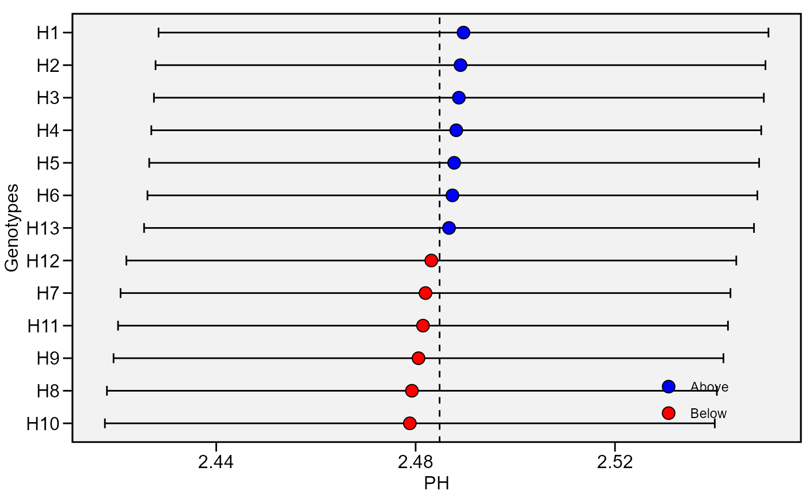
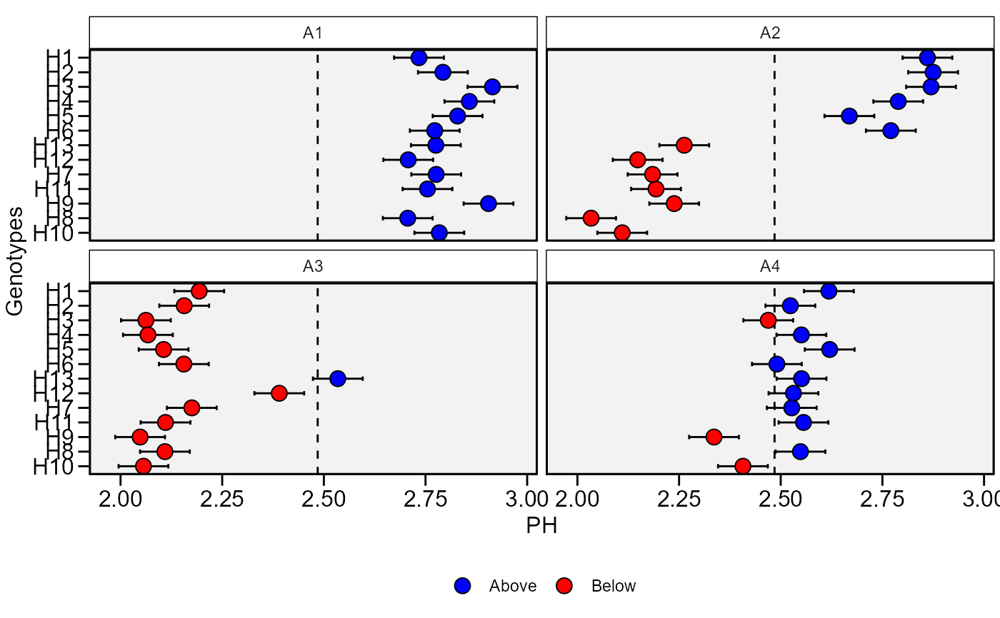

![[Stable]](figures/lifecycle-stable.svg)
Plot the predicted BLUP of the genotypes.
Usage
plot_blup(
x,
var = 1,
which = "gen",
ncol = NULL,
nrow = NULL,
prob = 0.05,
export = FALSE,
file.type = "pdf",
file.name = NULL,
plot_theme = theme_metan(),
width = 6,
height = 6,
err.bar = TRUE,
size.err.bar = 0.5,
size.shape = 3.5,
size.tex.lab = 12,
height.err.bar = 0.3,
x.lim = NULL,
x.breaks = waiver(),
col.shape = c("blue", "red"),
y.lab = "Genotypes",
x.lab = NULL,
n.dodge = 1,
check.overlap = FALSE,
panel.spacing = 0.15,
resolution = 300,
...
)Arguments
- x
The
waasb object- var
The variable to plot. Defaults to
var = 1the first variable ofx.- which
Which plot to shown. If
which = "gen"(default) plots the BLUPs for genotypes. To create a plot showing the BLUPs for genotype-environment combinations, usewhich = "ge".- ncol, nrow
The number of columns and rows, respectively, to be shown in the plot when
which = "ge".- prob
The probability error for constructing confidence interval.
- export
Export (or not) the plot. Default is
TRUE.- file.type
If
export = TRUE, define the type of file to be exported. Default ispdf, Graphic can also be exported in*.tiffformat by declaringfile.type = "tiff".- file.name
The name of the file for exportation, default is
NULL, i.e. the files are automatically named.- plot_theme
The graphical theme of the plot. Default is
plot_theme = theme_metan(). For more details, seeggplot2::theme().- width
The width "inch" of the plot. Default is
6.- height
The height "inch" of the plot. Default is
6.- err.bar
Logical value to indicate if an error bar is shown. Defaults to
TRUE.- size.err.bar
The size of the error bar for the plot. Default is
0.5.- size.shape
The size of the shape (both for genotypes and environments). Default is
3.5.- size.tex.lab
The size of the text in axis text and labels.
- height.err.bar
The height for error bar. Default is
0.3.- x.lim
The range of x-axis. Default is
NULL(maximum and minimum values of the data set). New arguments can be inserted asx.lim = c(x.min, x.max).- x.breaks
The breaks to be plotted in the x-axis. Default is
authomatic breaks. New arguments can be inserted asx.breaks = c(breaks)- col.shape
A vector of length 2 that contains the color of shapes for genotypes above and below of the mean, respectively. Default is
c("blue", "red").- y.lab
The label of the y-axis in the plot. Default is
"Genotypes".- x.lab
The label of the x-axis in the plot. Default is
NULL, i.e., the name of the selected variable.- n.dodge
The number of rows that should be used to render the Y labels. This is useful for displaying labels that would otherwise overlap.
- check.overlap
Silently remove overlapping labels, (recursively) prioritizing the first, last, and middle labels.
- panel.spacing
Defines the spacing between panels when
which = "ge".- resolution
The resolution of the plot. Parameter valid if
file.type = "tiff"is used. Default is300(300 dpi)- ...
Currently not used.
Author
Tiago Olivoto tiagoolivoto@gmail.com
Examples
# \donttest{
library(metan)
BLUP <- waasb(data_ge2,
resp = PH,
gen = GEN,
env = ENV,
rep = REP)
#> Evaluating trait PH |============================================| 100% 00:00:00
#> Method: REML/BLUP
#> Random effects: GEN, GEN:ENV
#> Fixed effects: ENV, REP(ENV)
#> Denominador DF: Satterthwaite's method
#> ---------------------------------------------------------------------------
#> P-values for Likelihood Ratio Test of the analyzed traits
#> ---------------------------------------------------------------------------
#> model PH
#> COMPLETE NA
#> GEN 9.39e-01
#> GEN:ENV 1.09e-13
#> ---------------------------------------------------------------------------
#> All variables with significant (p < 0.05) genotype-vs-environment interaction
plot_blup(BLUP)

plot_blup(BLUP, which = "ge")

# }